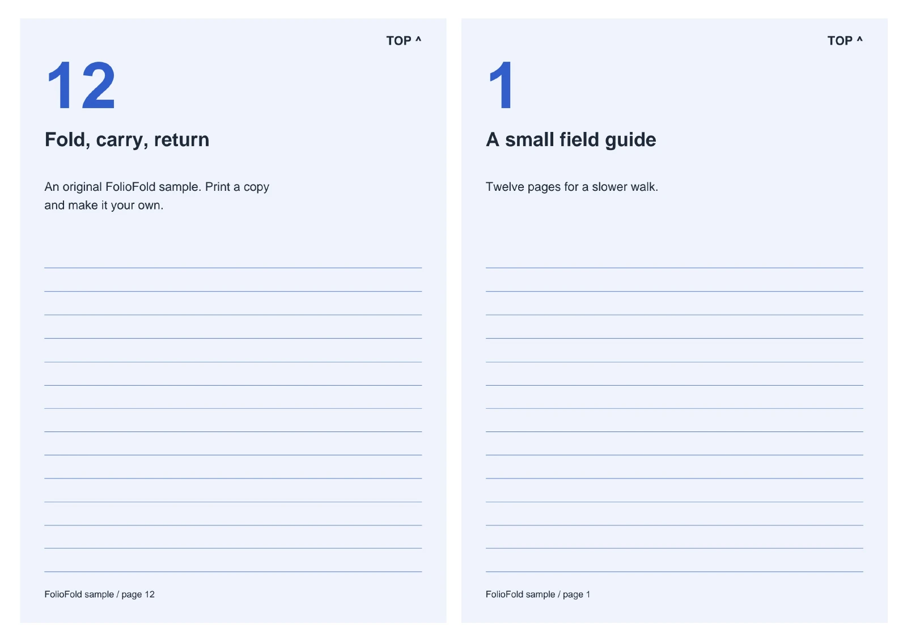
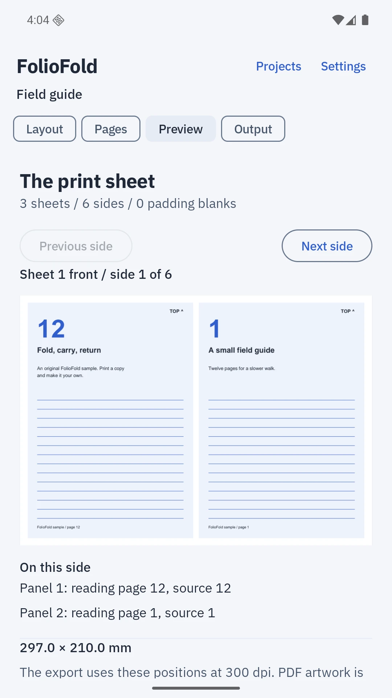
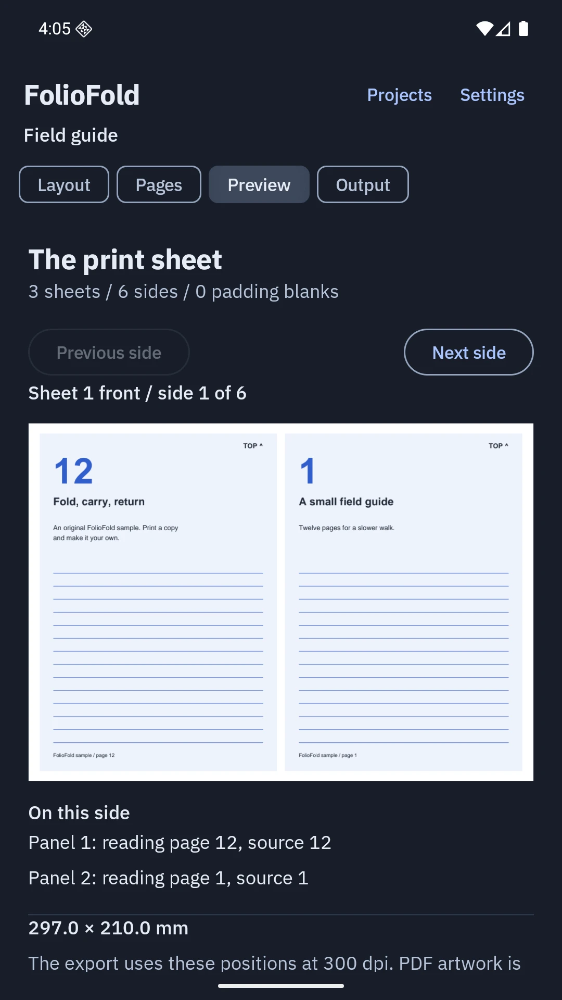

Ready for the fold.
Turn PDFs into booklets, zines and handouts, with every sheet arranged before you reach the printer.
See the print deskOne document.
Four ways to make it.
A small edition, a stitched collection, a pocket zine or a practical handout.

Check the sheet.
Then make the print.
Real sheet previews show page order, rotation and blanks before you export.

See where each page lands
Read the sheet numbers and source-page mapping. The same positions drive preview and export.
Keep a layout that works
Save paper sizes, margins, signature settings and duplex preferences as a named preset.
Keep the source, too
Imported originals stay unchanged. Export them separately or include them in a complete project archive.

A print file with clear limits.
300-dpi flattened PDF
Pages become images for printing. Selectable text, links and editable forms are not retained in the output.
Your printer, calibrated
Use the included A/B test before manual duplex. Choose back rotation and stack order to match your printer.
Files stay on your device
No accounts, uploads or analytics. Export, share or print only when you choose.
Try the paper first
The original twelve-page field guide is included in the app. You can also download its source here.
Download the sample PDFOne purchase.
The whole print desk.
No subscriptions, ads or extra feature purchases.
US launch price
UK £3.99 / India ₹199
Submitted to Google Play
FolioFold is not yet available to buy. The Play price in your region will be shown before purchase.
For Android 8 and later. Works offline on phones and tablets.
Read the printing guideBefore the first print
Will it connect directly to my printer?
FolioFold prepares PDFs and opens Android's print interface. Printer discovery and connection depend on your installed print service. You can also save or share the PDF and print elsewhere.
How do I avoid printing an imposed layout twice?
Use actual size or 100% scale when available. Disable booklet and N-up settings in the printer dialog because FolioFold has already arranged the pages. Start with a small calibration print.
What happens to protected or very large PDFs?
Use an unprotected PDF with up to 1,000 pages and 128 MiB. Custom paper supports sides from 50 to 450 mm. The app reports unsupported files before creating a project.
Can I move my projects to another device?
Export a complete archive from Settings. It includes original PDFs, reading order, layouts and presets. A valid restore replaces current projects. Archives are not encrypted; store them somewhere you trust.
Are these screenshots and output examples real?
The phone images are captures of the working app. The layout examples are PDFs exported by FolioFold on an Android phone. The opening studio photograph is generated editorial artwork.